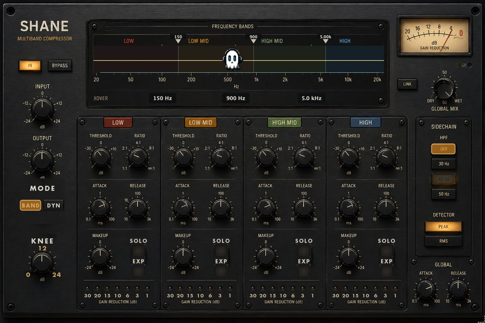

Why use it
What it doesFour bands, each with its own compressor, crossovers you drag on the spectrum.
Reach for it whenTaming a boomy low end without dulling the top. Bus work where one band is misbehaving.
What makes it differentPhase-compensated splits - bypassing every band sums flat. Dynamic EQ mode when you want bell shapes instead of bands.
September sale: 30% off until September 30 - use code SEPT30 at checkout.
Four bands, each with its own compressor, and crossovers you drag on the spectrum.
The band splits are phase-compensated, so bypassing every band sums back flat instead of leaving a dip where the crossovers meet.
CONTROLS
· Four bands with THRESHOLD · RATIO · ATTACK · RELEASE · MAKEUP
· SOLO and EXP (expander) per band
· Crossovers at 150 Hz / 900 Hz / 5 kHz, draggable
· MODE band or dynamic
· KNEE · INPUT · OUTPUT · GLOBAL MIX
· SIDECHAIN high-pass, PEAK or RMS detection
· LINK to move all four together
· Per-band gain reduction meters
WHAT'S NEW IN 1.6
· Detector CB mode - ballistics measured from a reference compressor, within 1% of the reference trajectory
· Rebuilt, re-signed and notarized for macOS (Universal) and Windows
REGISTRATION
· The plug-in runs unrestricted for a 3-day trial from first launch.
· Your licence key is on your Gumroad receipt and download page.
· Paste it into the plug-in once — it needs internet that one time, then works offline.
· Message me on Gumroad if you need it reset for a new machine.
FORMATS
macOS AU + VST3 + AAX (Pro Tools), Universal (Intel + Apple Silicon)
Windows VST3 + AAX (Pro Tools), 64-bit
INSTALL — WINDOWS
1. Unzip.
2. Copy the .vst3 to C:\Program Files\Common Files\VST3
3. Restart your DAW and rescan plugins.
INSTALL — macOS
1. Open the .pkg installer and follow the prompts.
2. Pick the formats you want (VST3 / AU / AAX).
3. Restart your DAW and rescan plugins.
Signed and notarized by Apple — no Terminal, no security workaround.
The installer asks for your admin password because the plug-ins go to /Library/Audio/Plug-Ins (available to every user on the Mac).
Stuck, or something sounds off? Message me — I answer every one.
UPDATES
Buy once, updated forever. Every future build is free to you — Gumroad emails you when there is a new one. No subscription, no upgrade fee.
FOLLOW ALONG
New plugins and what goes into them: